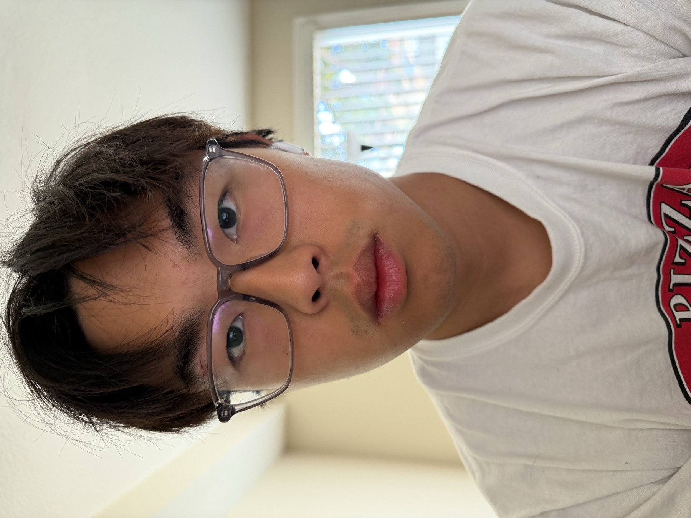
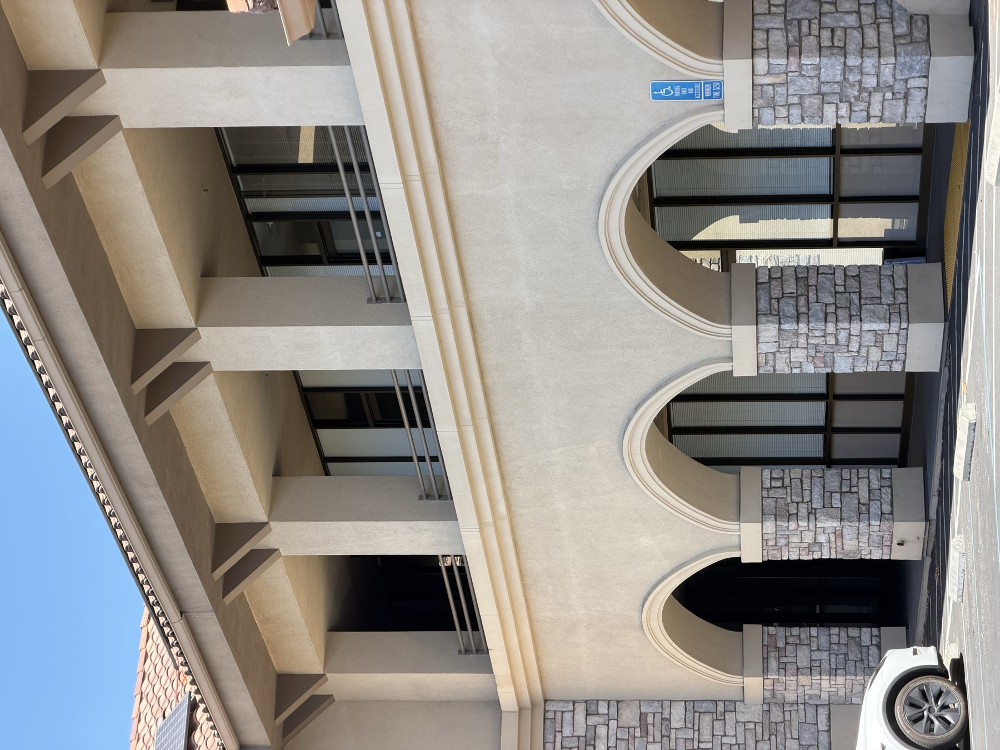
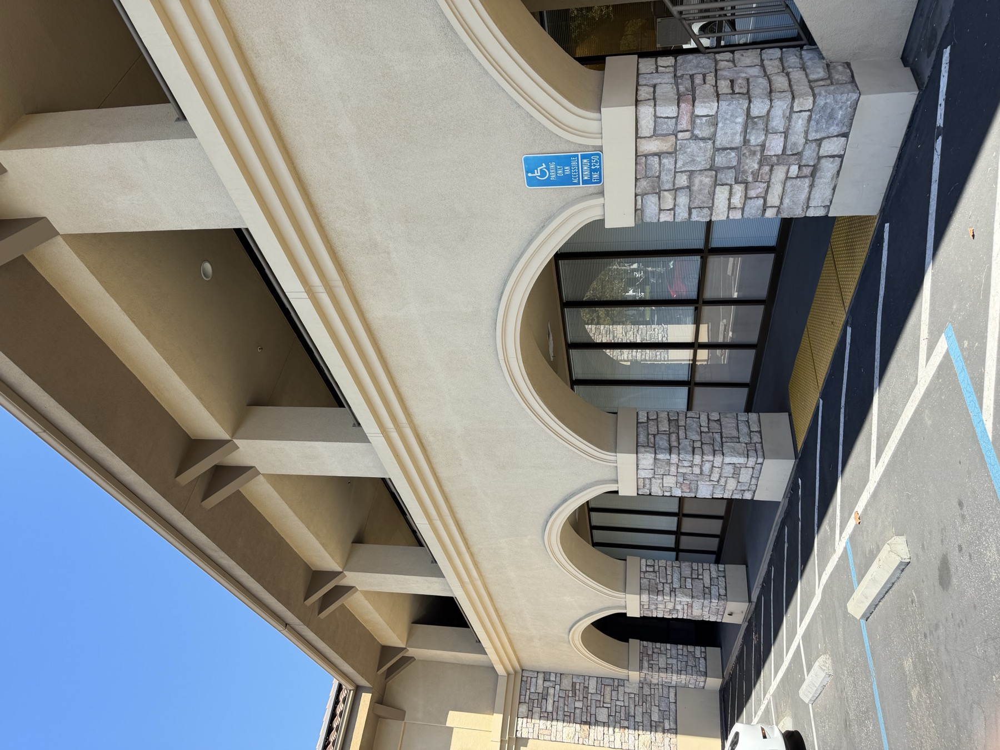

Perspective · Focal length · Center of projection
Becoming friends
with my camera.
Three small experiments with an iPhone 17 Pro reveal how moving the camera changes space—and how zoom changes the frame.
Explore the experiments01
Selfie: the wrong way vs. the right way
Distance reshapes a face.
For the first image, I photographed the subject from close range at 1×. For the second, I stepped several feet back and used 4× zoom while keeping the face approximately the same size in the frame.

1×02
Architectural perspective compression
The building folds in on itself.
I first photographed the angled facade from far away at 4×. Then I walked toward it and switched to 1×, matching the building's size as closely as possible.

4× · FAR
1× · NEAR03
The dolly zoom
A still subject. A moving world.
I moved backward while continuously zooming in, using the palm trunk as a fixed visual anchor. I sampled nine frames from the move and combined them into a forward loop.
 CAMERA ←
ZOOM →
CAMERA ←
ZOOM →
Move back
The camera-to-subject distance increases.
Zoom in
The subject remains roughly the same size.
Watch the background
The pool and building seem to rush forward.